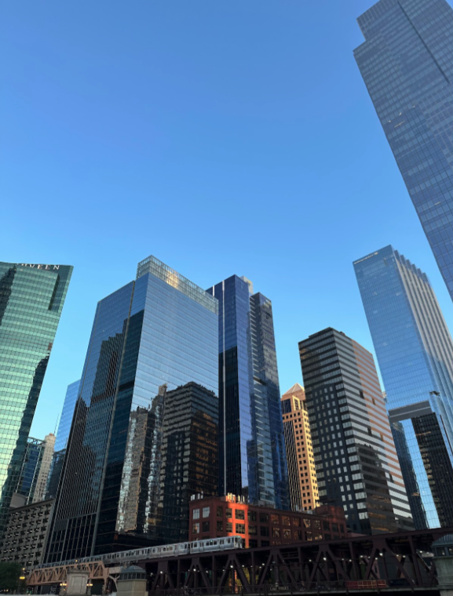

Mexico City, Mexico


Geographical Location: North America
Mexico City is the capital of Mexico. The city is full of Museums that vary from history, art, and even the history of the Mexican coin. In 2020 the Mexico city total population. was about 9.2 million The city is 571 miles squared
For tourists, there are places like an amusement park called Feria de Chapultepec and giant zoo Zoológico de Chapultepec that are a must visit. In the photo gallery there are also major attractions to visit.
Photo Gallery

Castillo de Chapultepec (Chapultepec Castle) is a castle that is located in Miguel Hidalgo, Mexico City.
Angel de la independencia (Angel of Independence) is an important monument located in Cuauhtémoc, Mexico City.

Templo Mayor (Mayor Temple) is a museum that is built by the ruins of an ancient temple.
This is the tomb of Margarita Maza de Juarez who was the wife of Benito Juarez (A historical president).

Estadio Azteca is the stadium where the national Mexican soccer team plays and the team Club América.
Nanjing Fuzi-Qinhuai


Nanjing is a popular city full of Chinese history and old traditional southern kinds of agriculture. As a northern people from China, Nanjing was the first city that I traveled to the region south of the Yangtze River. Confucius Temple - Qinhuai River is the most famous place to show the beauty of Nanjing.
Confucius temple has many traditional temple agricultures inside and many small shops about traditional Nanjing specialties and popular restaurants. There are also many colorful traditional lanterns which made the night of qinhuai more gorgeous. People can also take the “Hua Fang” ( a special kind of ship) to travel around the river and the whole scenery.
Photo Gallery


Seattle, Washington

Geographical Location: North America
Seattle, Washington is located in the United States on the North American continent. Seattle is broken up into neighborhoods, some being Capitol Hill, Pioneer Square and Queen Anne. Nearby suburbs include Mercer Island, Bellevue and Kirkland, located approximately 15-20 minutes from Seattle.
The University of Washington is located in Seattle. There is an undergraduate and a graduate program within the University and it is known for its pristine academics. U of W is located in the Northern part of Seattle.
Photo Gallery

Seattle’s most popular monuments taken by ferry boat.

The beautiful mount rainier in Seattle during Sunset

The famous Pike Place market sign

University of Washington’s cherry blossoms blooming in their quadrangle

The Seattle skylines lit up at night, featuring the newly built, zero carbon emission hockey arena.
Chicago, Illionis


Geographical Location: North America
On October 8, 1871, the Great Chicago Fire occurred destroying many buildings, miles of street, and leaving one-third of the city’s population homeless. The result of this was the “Great Rebuilding” which was a time period of heightened level of construction, new styles of architecture, innovative buildings, and sprouting economic growth. More than one hundred years ago, the world’s first double-deck trunnion bascule bridge opened on West Lake street. The towers and buildings around this bridge are different types of corporate offices, firms, business centers, restaurants, stores, apartments, condominiums, and hotels along with parks and tourist attractions.
What makes Chicago unique compared to all the other cities in the United States is that it has the most bridges, it inspired Gotham City, world renowned pieces of art, skyscrapers with multiple architectural styles, and the flow of the river is reversed. What once was a rail yard and parking lot, transformed by Mayor Richard M. Daley to become the Millenium Park to celebrate the passage of the second millennium. The Navy Pier was created with the intention of being a shipping and recreation facility and later evolved into premiere entertainment and exposition center. Due to the anti-Chinese sentiment and Chinese immigrants escaping violence, the Chinatown Square opened in 1993 from the efforts of Chinese activists demanding more land.
Photo Gallery

Cloud Gate is under construction for pavers replacement and accessibility upgrade to the plaza.
Jay Pritzker Pavilion is a bandshell style venue in Millenium Park that features concerts, events, and live shows.

Located in Grant Park is the Clarence F. Buckingham Memorial Fountain which is one of the biggest fountains in the world.

The Navy Pier is on the shoreline of Lake Michigan and it features nostalgic fairground rides, cultural attractions, museums, theater, dining, shopping, and more.
Chinatown Square is a two-level retail and commercial space that includes extensive shops, cafes, dim sum restaurants, and teahouses.
Sequoia National Park


Geographical Location: North America
Sequoia National Park is a large forest located in the Sierra Nevada mountain range in California. It is famous for its gigantic sequoia and redwood trees, as well as its underground Crystal Cave. The park is a well-known attraction to many tourists, receiving more than a million visitors annually. In addition to its collection of giant trees, Sequoia National Park is also home to thousands of prevalent flora and fauna.
Perhaps the most famous feature of Sequoia National Park is the General Sherman tree – the largest tree in the world. Measuring in at 275 feet tall, the tree towers over the surrounding landscape and the people who come to view it. As of today, the General Sherman tree is estimated to be around 2200 years old.
Photo Gallery

This large sequoia tree had a tunnel cut through it to make way for a trail. The size comparison with the people demonstrates the giant size of the trees in the forest.

This trail in Sequoia National Park houses a giant sequoia tree right next to the path on which people can hike. The giant trees are really a spectacle compared to the typical trees you see every day.

Pictured here is the General Sherman tree, the largest tree in the world. The sheer size and height of the tree is large enough to even be intimidating to people who are seeing it for the first time. It truly towers over the rest of the landscape around it.

Another well-known attraction of Sequoia National Park is its underground Crystal Cave. The cave exhibits intricate formations of stalactites and stalagmites throughout the underground of the forest.

In addition to its forests and caves, Sequoia National Park is also home to lots of wildlife, including this black bear. If you’re not careful with your stuff, they might even steal your food!
Singapore


Geographical Location: Asia
Singapore is a country located at the southern end of Malaysia. Despite the fact that Singapore is only 281.3 square miles and has a population of approximately 5.54 million, it has a thriving economy and is a strong player in the global market.
Singapore is famous for its city skyline, with a few landmarks such as the Marina Bay Sands Resort, Raffles Hotel, and the Esplanade. Additionally, Singapore has the highest rated airport in the world, with Changi Airport featuring many retail and dining options.
Photo Gallery

Hawker centres are a staple in singaporeans food culture. affordable food stalls run by elderly experienced cooks. You can find anything from any of the 4 main cultures in singapore (chinese, malay, indian and “western”)

Changi airport is consistently ranked as the best airport in the world, for its cleanliness, efficiency and shopping/dining options. It’s main feat is Jewel’s water feature.

These big gardens were built a few years ago and emphasise the idea that singapore is a “Garden City”. The trees light up at night and are a common location for photoshoots, night walks and weddings.

Pulau Ubin is a nature reserve island off the coast of Singapore. It is a popular destination for a day filled with hiking, kayaking among mangroves, biking on nature trails, and observing wildlife like crocodiles, monkeys and wild boar.

Sentosa is an island off the south coast of singapore. It hosts Universal Studios, casinos and beach resorts. It is Singapore’s vacation island. There are lots of white sandy beaches, hikes, beachfront restaurants and other attractions that are visited by tourists and locals alike